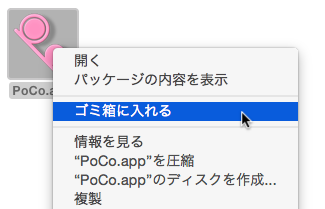
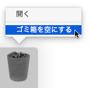

アンインストール
（インストーラがありませんので）アンインストーラも用意していません。手作業となりますが、次の手順を実施してください。
実行ファイルをゴミ箱へ移動し、ゴミ箱を空にしてください。


補足的な情報（ウィンドウ位置や環境設定の内容など）については UserDefaults を用いて管理しています。
そのため、ターミナル（Terminal.app）で次のコマンドを実行して UserDefaults によるファイルを削除してください。
defaults delete org.poco256.PoCo